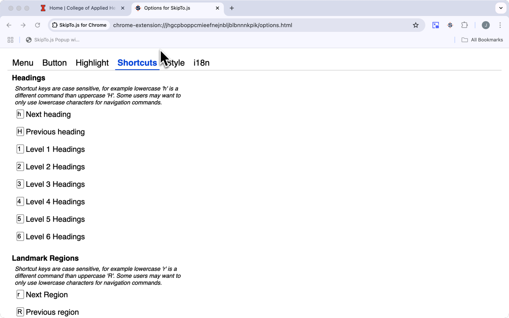

Shortcut Options

Shortcuts for sequential navigation to landmark regions and headings
There are 13 shortcuts the user can configure in the browser extensions for sequential navigation of landmark regions and headings.
| Feature | Default Shortcut |
|---|---|
| Next Region | r |
| Previous Region | R |
| Main Region | m |
| Navigation Region | n |
| Complementary Region | c |
| Next Heading | h |
| Previous Heading | H |
| Level 1 Heading | 1 |
| Level 2 Heading | 2 |
| Level 3 Heading | 3 |
| Level 4 Heading | 4 |
| Level 5 Heading | 5 |
| Level 6 Heading | 6 |